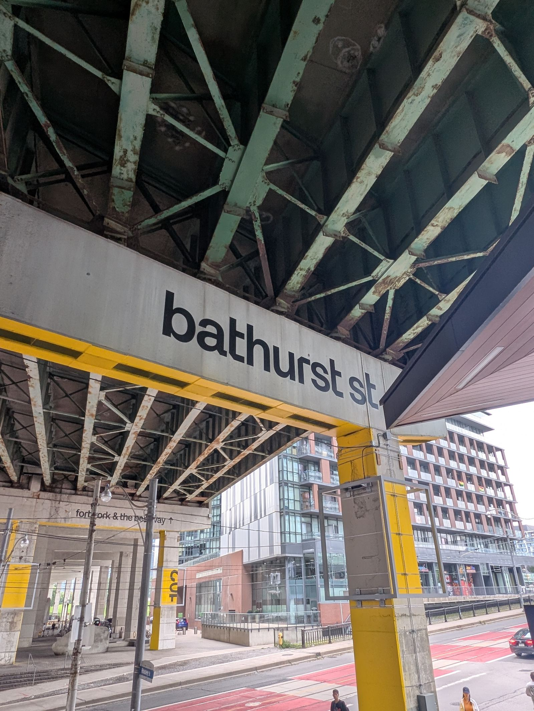
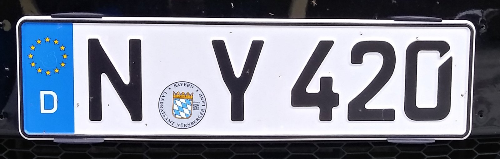

Stick No Bills · SemiBold 600
Amazingly few discotheques provide jukeboxes.
Typo
seen on — this very site
Major Mono Display
sphinx of black quartz, judge my vow
Anton Veselskyi
seen on — antonveselskyi.com · the AV monogram & every title band
Major Mono Display — All Caps
SPHINX OF BLACK QUARTZ, JUDGE MY VOW.
ANTON VESELSKYI
seen on — this page · caps showcase
Poiret One
Pack my box with five dozen liquor jugs.
AV Game Tier List
Cinzel
Jackdaws love my big sphinx of quartz.
Inspiration
seen on — game list · the inspiration view
Megrim
Jived fox nymph grabs quick waltz.
wanderlust
seen on — wanderlust
Jura
A wizard’s job is to vex chumps quickly in fog.
countries · cities · routes
seen on — wanderlust
Cinzel Decorative
Waltz, bad nymph, for quick jigs vex.
SHRT
seen on — shrt
Nova Script
My girl wove six dozen plaid jackets before she quit.
a gentler way to write it
seen on — shrt
JetBrains Mono
The quick brown fox jumps over the lazy dog;
auto shrt = sugar(cpp);
seen on — shrt · every code block
UnifrakturCook
How vexingly quick daft zebras jump!
Concerts
seen on — concerts
IM Fell DW Pica
Crazy Fredrick bought many very exquisite opal jewels.
A Sketchbook
seen on — concerts
Tinos
The five boxing wizards jump quickly.
notes from the crowd
seen on — concerts
Bodoni Moda
Glib jocks quiz nymph to vex dwarf.
live, loud, in print
seen on — concerts
Anton
BIG FJORDS VEX QUICK WALTZ NYMPH.
WASHED AWAY CHERRY
seen on — washed away cherry · concerts
Michroma
Sixty zippers were quickly picked from the woven jute bag.
sandstorm
seen on — sandstorm
VT323
Watch “Jeopardy!”, Alex Trebek’s fun TV quiz game.
STONKS DEFIED
seen on — stonks defied · hacking side project
Rubik Dirt
Foxy diva Jennifer Lopez wasn’t baking my quiche.
$IGN⸸$PELL
seen on — $ign⸸$pell
Toronto, Canada
TBW Galeria · custom cut of APK Galeria
the bentway
bathurst st
Bright vixens jump; dozy fowl quack.
seen on — The Bentway wayfinding, including the Bathurst Street signage

TBW Galeria is a custom cut of APK Galeria, a modern grotesque from APK Type Foundry, drawn for The Bentway’s 2024 rebrand. Toronto studio SUPERFANTASTIC led the identity work and brought in Dutch type designer Peter Korsman of Autograph to adapt the base face into a bespoke system for the park.
APK Galeria itself is a monoline grotesque with a double-story humanist “a” and softly finished terminals. For The Bentway, Korsman’s cut introduces sharp 45°/90° clipped corners on letters like “g,” “e,” and “k” — a nod to the hard concrete geometry of the Gardiner Expressway overhead, set against the warm, communal programming happening underneath it.
The whole system, wordmark included, is set entirely lowercase. Creative Director Mark Neil Balson put it simply: “The lowercase wordmark reflects the earnest, open and friendly spirit of the non-profit organisation.”
- The Bentway — the park itself
- SUPERFANTASTIC — brand identity project page
- APK Galeria — the base typeface at APK Type
Germany
FE-Schrift · fälschungserschwerende Schrift
B·KM 1970
FE-SCHRIFT
Mr. Jock, TV quiz PhD, bags few lynx.
seen on — every German vehicle registration plate since 2000

{kind=link}
Until the late 1990s, German plates were set in DIN 1451 — the same engineering typeface behind the country’s road signs. Its plain, round letterforms read well at speed, but that same simplicity made them easy to doctor: sand down a stroke and a P passes for an R, an F for an E, a C for a G, an O for a Q, a 3 for an 8.
That wasn’t just petty fraud. Through the 1970s and ’80s, altered plates on stolen cars turned up in attacks by the Red Army Faction, and West German authorities went looking for a typeface that couldn’t be casually rewritten. Development started in 1978; the result, phased in from the mid-1990s and made mandatory nationwide by 2000, was FE-Schrift — fälschungserschwerende Schrift, “script that makes forgery harder.”
Every character is drawn so no plausible knife-and-paint job turns it into a different one, and the counters are shaped to hold up under automatic number-plate cameras as well as a glance from a human eye. A national alphabet, redesigned entirely around a threat model — a post from propaganda.institute is what sent me down this rabbit hole.
Try this: mentally add one stroke to each letter below and watch it turn into a different one. That’s the exact trick a sanding block and some paint used to pull off on a stolen car’s plate — and the whole reason this typeface exists.
- P→R add a leg
- F→E add a bottom bar
- C→G close it, add a crossbar
- O→Q add a tail
- 3→8 close the openings
- propaganda.institute — the post that started it
- Vehicle registration plates of Germany — Wikipedia, FE-Schrift & DIN 1451 background
- GL-Nummernschild — the free FE-Schrift recreation used on this page